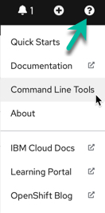
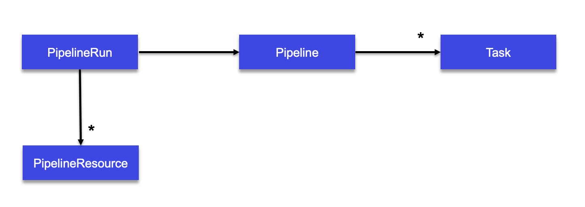
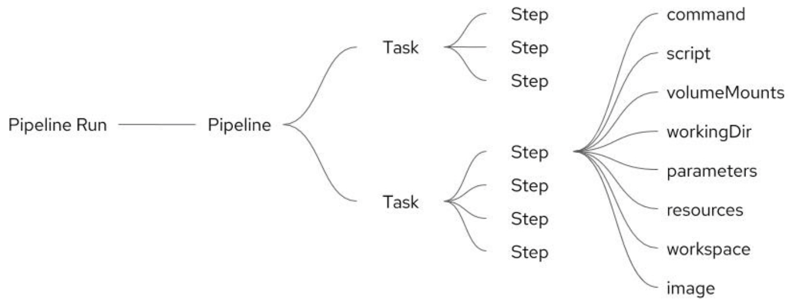
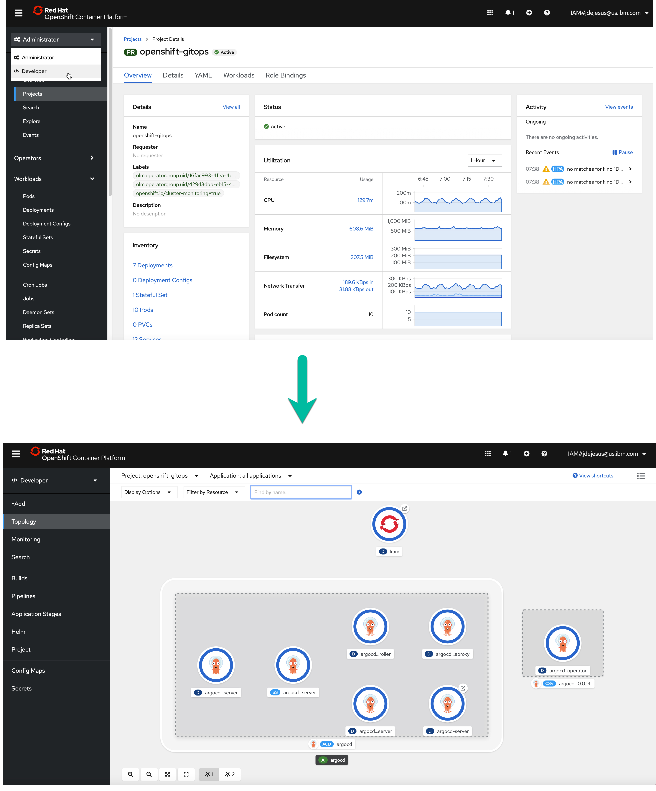

GitOps
Gitops is a way of implementing Continuous Deployment for cloud native applications.
The core idea of GitOps is having a Git repository that always contains declarative descriptions of the infrastructure currently desired in the production environment and an automated process to make the production environment match the described state in the repository.
GitOps
Developers and operations want to:
- Audit all changes made to pipelines, infrastructure, and application configuration.
- Roll forward/back to desired state in case of issues.
- Consistently configure all environments.
- Reduce manual effort by automating application and environment setup and remediation.
- Have an easy way to manage application and infrastructure state across clusters/environments
GitOps is a natural evolution of DevOps and Infrastructure-as-Code.
Core principles
- Git is the source of truth.
- Separate application source code (Java/Go) from deployment manifests i.e the application source code and the GitOps configuration reside in separate git repositories.
- Deployment manifests are standard Kubernetes (k8s) manifests i.e Kubernetes manifests in the GitOps repository can be simply applied with nothing more than a oc apply.
- Kustomize for defining the differences between environments i.e reusable parameters with extra resources described using kustomization.yaml.
Concepts
- Day 1 Operations are actions that users take to bootstrap a GitOps configuration. See this note on how to set up GitOps and Sealed Secret.
- Day 2 Operations are actions that users take to change a GitOps system.
Supporting tools
- kam CLI from the Red Hat team gitops
- Tekton for continuous integration and even deployment
- ArgoCD for continuous deployment
Playground
Use IBM open labs
Connect to the IBM open lab home page, Select bring your own app to start a cluster with 2 nodes.
Login to the cloud: ibmcloud login --sso
Get access to a temporary access code:
Do not select a region, and do not ipdate the cli.
Access the Openshift cluster: oc login --server https://.....
Verify nodes and services
oc get nodes
oc get svc,deploy,po --all-namespaces
Openshift try
Red Hat OpenShift trial. With this environment we cannot create new project, only use two predefined projects.
Having a schema registry
We can use docker hub, quay.io or define a private registry:
- ibm cloud container registry provides a multi-tenant private image registry that you can use to store and share your container images with users in your IBM Cloud account
- Amazon Elastic Container Registry (ECR) we can share container software privately within your organization or publicly worldwide for anyone to discover and download. geo-replicated for high availability and faster downloads
To move one image from one registry to another use docker tag to change the image name:
docker tag <source_image>:<tag> <region>.icr.io/<my_namespace>/<new_image_repo>:<new_tag>
OpenShift Pipelines
OpenShift Pipelines is a Continuous Integration / Continuous Delivery (CI/CD) solution based on the open source Tekton project. The key objective of Tekton is to enable development teams to quickly create pipelines of activity from simple, repeatable steps. A unique characteristic of Tekton that differentiates it from previous CI/CD solutions is that Tekton steps execute within a container that is specifically created just for that task.
Users can interact with OpenShift Pipelines using the web user interface, command line interface, and via a Visual Studio Code editor plugin.
The command line access is a mixture of the OpenShift oc command line utility
and the tkn command line for specific Tekton commands.
The tkn and oc command line utilities can be downloaded from the OpenShift console web user interface.
To do this, simply press the white circle containing a black question mark near your name on the top right
corner and then select Command Line Tools:

Tekton tutorial
This section is a summary based on OpenShift pipeline tutorial, Red Hat scholar - tekton tutorial and this blog:
- Tekton is a flexible, Kubernetes-native, open-source CI/CD framework that enables automating deployments across multiple platforms (Kubernetes, serverless, VMs, etc)
- Build images with Kubernetes tools such as S2I, Buildah, Buildpacks, Kaniko,...
-
With openshift pipelines operator, CRD, service account and cluster binding are created automatically:
-
install the operator via Operator Hub or using yaml:
- Service accounts are named
builderandpipeline -
Concepts
- Task: a reusable, loosely coupled number of steps that perform a specific task. Tasks are executed/run by creating TaskRuns. A TaskRun will schedule a Pod. Task definitions are reusable.
- Pipeline: the definition of the pipeline and the Tasks that it should perform
- Resources: build uses resources called PipelineResource that helps to configure the git repo url, the final container image name etc

The task requires an input resource of type git that defines where the source is located.
The git source is cloned to a local volume at path /workspace/source where source comes from the name we gave to the resource
Administration steps
Tested on RedHat OpenShit Pipelines Operator version 1.2.3 6/10/21
- Install Openshift pipelines operator from the operator hub or using oc cli with an operator subscription like in EDA lab inventory openshift pipelines
oc apply -f https://raw.githubusercontent.com/ibm-cloud-architecture/eda-lab-inventory/master/environments/openshift-pipelines/operator.yaml
- Define a service account
pipeline(created automatically by the OpenShift Pipeline Operator operator) - Ensure Tekton pipelines is deployed and the API is availabe for use
kubectl api-resources --api-group='tekton.dev'
Results
NAME SHORTNAMES APIGROUP NAMESPACED KIND
clustertasks tekton.dev false ClusterTask
conditions tekton.dev true Condition
pipelineresources tekton.dev true PipelineResource
pipelineruns pr,prs tekton.dev true PipelineRun
pipelines tekton.dev true Pipeline
runs tekton.dev true Run
taskruns tr,trs tekton.dev true TaskRun
tasks tekton.dev true Task
Developer's steps:
At the high level the generic steps for a given application look like:
- Create custom task or install existing reusable Tasks
- Create PipelineResources to specify the github source repository and the docker image name.
- Create a Pipeline to define your application's delivery pipeline
- Create a PersistentVolumeClaim to provide the volume/filesystem for the pipeline execution or provide a VolumeClaimTemplate which creates a PersistentVolumeClaim
- Create a PipelineRun to instantiate and invoke the pipeline
Define tasks
The fundamental resource of the Tekton process is the task, which contains at least one step to be executed and performs a useful function.
Tasks execute steps in the order in which they are written, with each step completing before the next step starts. While Pipelines execute tasks
in parallel unless a task is directed to run after the completion of another task. This facilitates parallel execution of build / test / deploy
activities and is a useful characteristic that guides the user in the grouping of steps within tasks.
We need to have tasks to build the application executable, to build the docker image, push to the image registry and potentially deploy to the target runtime project. This last task is in fact done with ArgoCD.
- first task is to clone a repo. In the Tekton hub we can find the yaml for this task. But with the OpenShift pipeline operator, it is part of the clustertask:
tkn clustertask describe git-clone
oc apply -f https://raw.githubusercontent.com/tektoncd/catalog/main/task/git-clone/0.3/git-clone.yaml
Here is an example of using this task in a pipeline
tasks:
- name: fetch-source
taskRef:
name: git-clone
kind: ClusterTask
workspaces:
- name: output
workspace: build-ws
params:
- name: url
value: $(params.repo-url)
- name: revision
value: $(params.revision)
The workspace directory is where your Task/Pipeline sources/build artifacts will be cloned and generated.
See next pipeline section to see how to configure this git-clone.
Remarks: when using resource of type git then a clone will be done implicitly.
- Define a Task to build a quarkus app: this is done by using the maven task:
tkn task describe mavenor by using custom task using the maven docker image.
To use the Tekton predefined maven task, use:
oc apply -f https://raw.githubusercontent.com/tektoncd/catalog/main/task/maven/0.2/maven.yaml
There is an alternative is to define the image to use for a step of the task. A pipeline with maven image.
The source is a sub-path, under which Tekton cloned the application sources.
- Other task example to apply kubernetes manifests (apply-manifests) to deploy an image.
or update-deployment task to path the application deployment with a new
image name:tag.
The tasks are by default tied to namespace. ClusterTask makes the task available in all namespaces
- list the tasks defined in current project (Tasks are local to a namespace):
tkn task list
and use next command to list the Operator-installed additional cluster tasks such as buildah
tkn clustertasks list
-
In Tekton Hub we may find reusable tasks and pipelines like:
-
git-clone has url as input and a workspace to clone code to.
- maven
- buildah builds source into a container image and then pushes it to a container registry
tkn clustertask describe buildah
Define resources
A reference to the resource is declared within the task and then the steps use the resources in commands. A resource can be used as an output in a step within the task.
In Tekton, there is no explicit Git pull command. Simply including a Git resource in a task definition will result
in a Git pull action taking place, before any steps execute, which will pull the content of the Git repository
to a location of /workspace/<git-resource-name>. In the example below the Git repository content is pulled to /workspace/source.
kind: Task
resources:
inputs:
- name: source
type: git
outputs:
- name: intermediate-image
type: image
steps :
- name: build
PipelineResource defines resources to be used as input or output to task and pipeline, they are reusable.
It looks it is still in alpha release so may not be kept.
Example of resource for git repo:
apiVersion: tekton.dev/v1alpha1
kind: PipelineResource
metadata:
name: item-inventory-source
spec:
type: git
params:
- name: url
value: https://github.com/jbcodeforce/refarch-eda-item-inventory
- name: revision
value: master
See other resource definitions like docker image names.
- get list of resources defined in the project:
tkn res ls
Create pipeline
A Pipeline is a collection of Tasks that you define and arrange in a specific order of execution as part of your continuous integration flow:

The pipelineRun invokes the pipeline, which contains tasks. Each task consists of a number of steps, each of which can contain elements such as command, script, volumeMounts, workingDir, parameters, resources, workspace, or image.
Generic pipeline takes the source code of the application from GitHub and then builds jar and docker image and deploys it on OpenShift. The deployment can also being done with ArgoCD.
volumeMountsallow you to add storage to a step. Since each step runs in an isolated container, any data that is created by a step for use by another step must be stored appropriately. If the data is accessed by a subsequent step within the same task then it is possible to use the/workspacedirectory to hold any created files and directories. A further option for steps within the same task is to use an emptyDir storage mechanism which can be useful for separating out different data content for ease of use. If file stored data is to be accessed by a subsequent step that is in a different task then a Kubernetes persistent volume claim is required to be used. As explained below, this is what we do for the Travelport demo.
Note that volumes are defined in a section of the task outside the scope of any steps, and then each step that needs the volume will mount it.
- The
workingDirelement refers to the path within the container that should be the current working directory when the command is executed. parameters: As with volumeMounts, parameters are defined outside the scope of any step within a task and then they are referenced from within the step. Parameters in this case refers to any information in text form required by a step such as a path, a name of an object, a username etc.
Workspace-
A
workspaceis similar to a volume in that it provides storage that can be shared across multiple tasks. A persistent volume claim is required to be created first and then the intent to use the volume is declared within the pipeline and task before mapping the workspace into an individual step such that it is mounted. Workspaces and volumes are similar in behavior but are defined in slightly different places. -
Image: Since each Tekton step runs within its own image, the image must be referenced as shown in the example below:
steps :
- name: build
command:
- buildah
- bud
- '-t'
- $(resources.outputs.intermediate-image.url)
image: registry.redhat.io/rhel8/buildah
A Pipeline requires PipelineResources to provide inputs and store outputs for the Tasks that comprise it.
- Declare the pipeline in a yaml file like tutorial build and deploy or the item inventory aggregator
- In previous section there is an example of git clone task declared in a pipeline. It uses the pipeline parameters to get URL and revision and output to the workspace.
The workspace is declared in the pipeline, and the names must match
spec:
params:
- name: repo-url
type: string
description: The git repository URL to clone from.
- name: revision
type: string
description: The git tag to clone.
workspaces:
- name: build-ws
This workspace will be specified in the pipelinerun (as well as url and revision):
apiVersion: tekton.dev/v1beta1
kind: PipelineRun
metadata:
generateName: build-quarkus-app-result-
spec:
pipelineRef:
name: build-quarkus-app
workspaces:
- name: build-ws
emptyDir: {}
- Use of Persistent Storage: adding persistent storage for the pipeline to allow us to cache and manage state between tasks in the pipeline. For example, for its build, Maven needs all the repositories from the project dependencies. Once persisted future builds do not have to download dependent jars.
Since each step runs in an isolated container any data that is created by a step for use by another step must be stored appropriately.
If the data is accessed by a subsequent step within the same task then it is possible to use the /workspace directory to hold any
created files and directories. A further option for steps within the same task is to use an emptyDir storage mechanism which can be useful
for separating different data content for ease of use. If file stored data is to be accessed by a subsequent step that is in a different
task, then a Kubernetes persistent volume claim is required to be used.
The mechanism for adding storage to a step is called a volumeMount, as described further below.
In our case, a persistent volume claim called pipeline-storage-claim is mounted into the step at a specifc path. Other steps within the task and within other tasks of the pipeline can also mount this volume and reuse any data placed there by this step. Note that the path used is where the Buildah command expects to find a local image repository. As a result any steps that invoke a Buildah command will mount this volume at this location.
Buildah is a tool that facilitates building Open Container Initiative (OCI) container images.
It provides a command line tool that can be used to create a container from scratch or using an image as a starting point.
You need to use persistence storage when your data must still be available, even if the container, the worker node, or the cluster is removed. You should use persistent storage in the following scenarios:
- Stateful apps
- Core business data
- Data that must be available due to legal requirements, such as a defined retention period
- Auditing
Data that must be accessed and shared across app instances. For example:
- Access across pods: When you use Kubernetes persistent volumes to access your storage, you can determine the number of pods that can mount the volume at the same time. Some storage solutions, such as block storage, can be accessed by one pod at a time only. With other storage solutions, you can share volume across multiple pods.
- Access across zones and regions: You might require your data to be accessible across zones or regions. Some storage solutions, such as file and block storage, are data center-specific and cannot be shared across zones in a multizone cluster setup.
- Execute it using a pipeline run
oc create -f build/pipelinerun.yaml
tkn pipeline start:
tkn pipeline start
- List pipeline runs
tkn pipelinerun list
Some potential errors
- Build faild to access internal registry with
x509: certificate signed by unknown authority. We may need to do not verify TLS while pushing image to the internal docker registry or use a public registry
Triggers
Enhancing
We can use nexus to keep maven downloaded jars.
oc apply -f https://raw.githubusercontent.com/redhat-scholars/tekton-tutorial/master/install/utils/nexus.yaml
oc expose svc nexus
Other readings
ArgoCD tutorial
To implement our GitOps workflow, we used Argo CD, the GitOps continuous delivery tool for Kubernetes. Argo CD models a collection of applications as a project and uses a Git repository to store the application's desired state (a gitops repo). Argo CD compares the actual state of the application in the cluster with the desired state defined in Git and determines if they are out of sync. When it detects the environment is out of sync, Argo CD can be configured to either send out a notification to kick off a separate reconciliation process or Argo CD can automatically synchronize the environments to ensure they match.
ArgoCD is deployed with OpenShift GitOps operator.
If you go to the Developer's Perspective, you can see a topology:

OpenShift GitOps is an OpenShift add-on which provides Argo CD and other tooling to enable teams to implement GitOps workflows for cluster configuration and application delivery.
Clicking the Argo Server node that contains the URL takes you to the Argo login page.
See this getting started tutorial and the core concept
- Install argocd: this will includes CRD, service account, RBAC policies, config maps, secret and deploy: Redis and argocd server. It makes sense to have one ArgoCD instance deploy per cluster. It can manage projects and within project, applications.
oc new-project argocd
oc apply -f https://raw.githubusercontent.com/argoproj/argo-cd/stable/manifests/install.yaml
-
It can be also installed via the Red Hat OpenShift GitOps operator. After installing the OpenShift GitOps operator, an instance of Argo CD is installed in the
openshift-gitopsnamespace which has sufficent privileges for managing cluster configurations. -
Finally, you can declare the operator yaml and service account and role binding as part of your gitops. See sample in this folder.
Once installed the following pods run:
argocd-application-controller-0 1/1 Running 0 20h
argocd-dex-server-9dc558f5-4dw4q 1/1 Running 2 20h
argocd-redis-759b6bc7f4-g2jbj 1/1 Running 0 20h
argocd-repo-server-5fbf484547-6x4rj 1/1 Running 0 20h
argocd-server-6d4678f7f6-vqs64
- Install argocd CLI
On MAC: brew install argocd
- Expose the API server: By default, the Argo CD API server is not exposed with an external IP. Update the service to use load balancer:
kubectl patch svc argocd-server -n argocd -p '{"spec": {"type": "LoadBalancer"}}'
The initial password for the admin account is auto-generated and stored as clear text in the field password in a secret named argocd-initial-admin-secret
oc get secret argocd-initial-admin-secret -o jsonpath="{.data.password}" | base64 -d && echo ""
Get the IP address of the argocd server: oc get svc then look at the LoadBalancer service (argocd-server) external-IP.
argocd login SERVERIP then use admin user and password.
You can also access the ArgoCD UI using the load balancer IP address, admin user and password.
- Define application: this is the deployable unit, which is map to a k8s deployment that references the image built during the CI pipeline. The approach is to use one git repository to represent the solution to deploy. Each component, microservice or app is defined in its own folder and can use Helm or Kustomize to define the deployment, service, configmap...
You use one application per target environment.
Here is an example of argoCD app:
On the application tile, we can use the 'SYNC' to deploy the application or use argocd app get <appname>.
Connect pipeline to deployment
Once the manifests for a given app are defined in the gitops repository, we need to have the pipeline being able to update the deployment descriptor with the image reference and tag defined as part of the build pipeline.
The pipeline needs to have the git credentials to be able to write to the gitops repository. Credentials are saved in a secret and a configmap define github host, user.
More reading
Kustomize and gitops
There are at least two repositories: the application repository and the environment configuration repository.
There are two ways to implement the deployment strategy for GitOps:
- Push-based: use CI/CD tools like jenkins, travis... to define a pipeline, triggered when application code source is updated, to build the container image and deploy the modified yaml files to the environment repo. Changes to the environment configuration repository trigger the deployment pipeline. It has to be used for running an automated provisioning of cloud infrastructure. See also this tutorial.
- Pull-based: An operator takes over the role of the pipeline by continuously comparing the desired state in the environment repository with the actual state in the deployed infrastructure.
A CICD based on git action will build the image and edit Kustomize patch to bump the expected container tag using the new docker image tag, then commit this changes to the gitops repo.
Kustomize is used to simplify the configuration of application and environment. Kustomize traverses a Kubernetes manifest to add, remove or update configuration options without forking. It is available both as a standalone binary and as a native feature of Kubectl. A lot of examples here..
The simple way to organize the configuration is to use one kustomize folder, then one folder per component, then one overlay folder in which environment folder include kustomization.yaml file with patches.
└── postgres
├── base
│ ├── configmap.yaml
│ ├── kustomization.yaml
│ ├── pvc.yaml
│ ├── secret.yaml
│ ├── service-account.yaml
│ ├── statefulset.yaml
│ ├── svc-headless.yaml
│ └── svc.yaml
├── kustomization.yaml
└── overlays
└── dev
├── kustomization.yaml
└── secret.yaml
Here is an example of kustomization.yaml:
bases:
- ../../base
patchesStrategicMerge:
- ./secret.yaml
The patchesStrategicMerge lists the resource configuration YAML files that you want to merge to the base kustomization. You must also add these files to the same repo as the kustomization file, such as overlay/dev. These resource configuration files can contain small changes that are merged to the base configuration files of the same name as a patch.
In GitOps, the pipeline does not finish with something like oc apply... but it’s an external tool (Argo CD or Flux) that detects the drift in the Git repository and will run these commands.
Here is a command to install ArgoCD on k8s, see details here.
kubectl apply -n argocd -f https://raw.githubusercontent.com/argoproj/argo-cd/stable/manifests/install.yaml
For OpenShift:
- create an
argocdproject - use operator hub, and install the operator in this project. Nothing to change in the default configuration
- deploy one instance of ArgoCD with the following customization:
apiVersion: argoproj.io/v1alpha1
kind: ArgoCD
metadata:
name: argocd
namespace: argocd
spec:
server:
ingress:
enabled: true
route:
enabled: true
dex:
openShiftOAuth: true
image: quay.io/ablock/dex
version: openshift-connector
rbac:
policy: |
g, system:cluster-admins, role:admin
An example of gitops with kustomize is in this vaccine-gitops repo
Future readings
Kam
Goal: create a gitops project for an existing application service as day 1 operation and then add more service.
- Use the following kam command:
kam bootstrap \
--service-repo-url https://github.com/jbcodeforce/refarch-eda-store-inventory \
--gitops-repo-url https://github.com/jbcodeforce/refarch-eda-inventory-gitops \
--image-repo image-registry.openshift-image-registry.svc:5000/ibmcase/store-aggregator \
--output refarch-eda-inventory-gitops \
--git-host-access-token <agithubtoken> \
--prefix my-inventory --push-to-git=true
Kam bug:: the application name is marching the git repo name, and there will be an issue while creating binding with a limit of the number of characters. kam boostrap need a --service-name argument.
This will create a gitops project, pushed to github.com as private repo. The repo includes two main folders:
environmentincludes two environment definitions for dev and stage.
environments
│ ├── my-inventory-dev
│ │ ├── apps
│ │ │ └── app-refarch-eda-store-inventory
│ │ │ ├── base
│ │ │ │ └── kustomization.yaml
│ │ │ ├── kustomization.yaml
│ │ │ ├── overlays
│ │ │ │ └── kustomization.yaml
│ │ │ └── services
│ │ │ └── refarch-eda-store-inventory
│ │ │ ├── base
│ │ │ │ ├── config
│ │ │ │ │ ├── 100-deployment.yaml
│ │ │ │ │ ├── 200-service.yaml
│ │ │ │ │ ├── 300-route.yaml
│ │ │ │ │ └── kustomization.yaml
│ │ │ │ └── kustomization.yaml
│ │ │ ├── kustomization.yaml
│ │ │ └── overlays
│ │ │ └── kustomization.yaml
│ │ └── env
│ │ ├── base
│ │ │ ├── argocd-admin.yaml
│ │ │ ├── kustomization.yaml
│ │ │ ├── my-inventory-dev-environment.yaml
│ │ │ └── my-inventory-dev-rolebinding.yaml
│ │ └── overlays
│ │ └── kustomization.yaml
│ └── my-inventory-stage
│ └── env
│ ├── base
│ │ ├── argocd-admin.yaml
│ │ ├── kustomization.yaml
│ │ └── my-inventory-stage-environment.yaml
│ └── overlays
│ └── kustomization.yaml
configdefine argocd and cicd project to support deployment and build pipeline
├── config
│ ├── argocd
│ │ ├── argo-app.yaml
│ │ ├── cicd-app.yaml
│ │ ├── kustomization.yaml
│ │ ├── my-inventory-dev-app-refarch-eda-store-inventory-app.yaml
│ │ ├── my-inventory-dev-env-app.yaml
│ │ └── my-inventory-stage-env-app.yaml
│ └── my-inventory-cicd
│ ├── base
│ │ ├── 01-namespaces
│ │ │ ├── cicd-environment.yaml
│ │ │ └── ibmcase-environment.yaml
│ │ ├── 02-rolebindings
│ │ │ ├── argocd-admin.yaml
│ │ │ ├── internal-registry-ibmcase-binding.yaml
│ │ │ ├── pipeline-service-account.yaml
│ │ │ ├── pipeline-service-role.yaml
│ │ │ ├── pipeline-service-rolebinding.yaml
│ │ │ └── sealed-secrets-aggregate-to-admin.yaml
│ │ ├── 03-secrets
│ │ │ ├── docker-config.yaml
│ │ │ ├── git-host-access-token.yaml
│ │ │ ├── gitops-webhook-secret.yaml
│ │ │ └── webhook-secret-my-inventory-dev-refarch-eda-store-inventory.yaml
│ │ ├── 04-tasks
│ │ │ ├── deploy-from-source-task.yaml
│ │ │ └── set-commit-status-task.yaml
│ │ ├── 05-pipelines
│ │ │ ├── app-ci-pipeline.yaml
│ │ │ └── ci-dryrun-from-push-pipeline.yaml
│ │ ├── 06-bindings
│ │ │ ├── github-push-binding.yaml
│ │ │ └── my-inventory-dev-app-refarch-eda-store-inventory-refarch-eda-store-inventory-binding.yaml
│ │ ├── 07-templates
│ │ │ ├── app-ci-build-from-push-template.yaml
│ │ │ └── ci-dryrun-from-push-template.yaml
│ │ ├── 08-eventlisteners
│ │ │ └── cicd-event-listener.yaml
│ │ ├── 09-routes
│ │ │ └── gitops-webhook-event-listener.yaml
│ │ └── kustomization.yaml
│ └── overlays
│ └── kustomization.yaml
The environment includes folders for each app of the solution. In an app folder the services defines the manifests
to configure the application. When created the image reference nginx we need to build the image with a pipeline with tekton.
To bring up the argocd do oc apply -k config/argocd/ which will create:
- three projects: my-inventory-cicd, my-inventory-dev, my-inventory-stage
- a set of role bindings, secrets...
To access the argocd application use the Grid icon in OpenShift console and admin user. The secret is define in openshift-gitops and secret name argocd-cluster-cluster.
oc get secret argocd-cluster-cluster -n openshift-gitops -ojsonpath='{.data.admin\.password}' | base64 -d